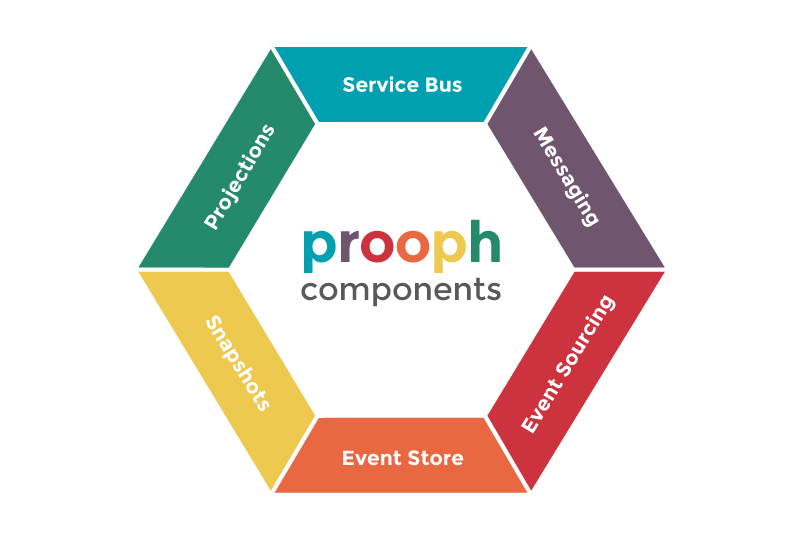
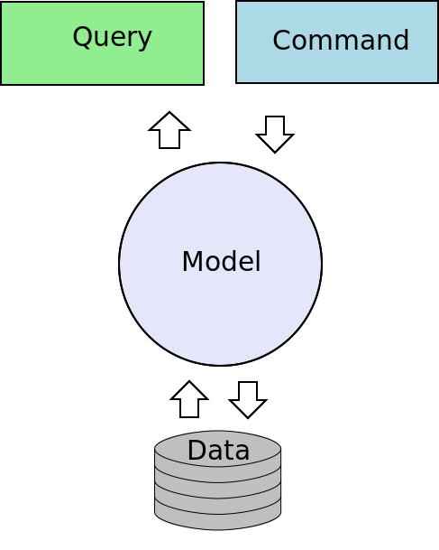
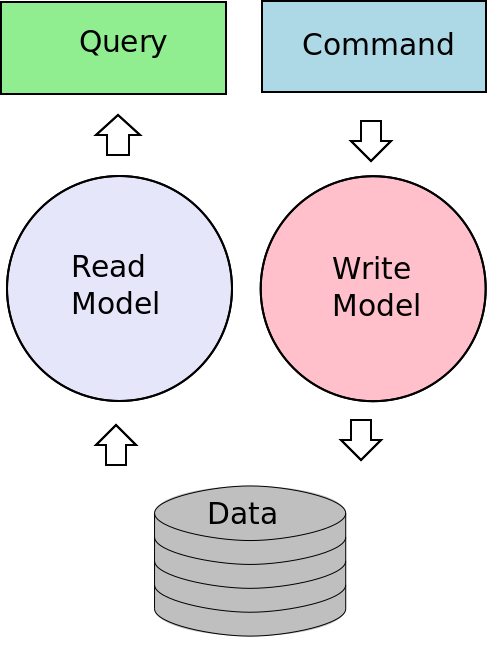
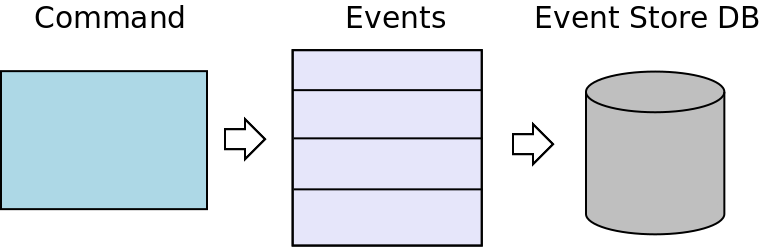

Hi!
Sascha-Oliver Prolic
 contributor
contributor
 maintainer
Current projects
Prooph Event Store, Prooph Service-Bus, Prooph Snapshotter, Prooph Event Sourcing, Prooph PSR-7 middleware, Service-Bus ZFC-Rbac Bridge, HumusAmqp, PhpDisruptor
CQRS & Event Sourcing
CQRS ???
C ommand
Q uery
R esponsibility
S egregation
CRUD
CQRS
Command
Commands are value objects
Commands do not return anything
final class ChangeUserName {
private $userId;
private $userName;
public function __construct($userId, $userName) {
$this->userId = $userId;
$this->userName = $userName;
}
public function userId() { return $this->userId; }
public function userName() { return $this->userName; }
}How are commands
executed?
Command-Bus
use Prooph\ServiceBus\CommandBus;
use Prooph\ServiceBus\Plugin\Router\CommandRouter;
$commandBus = new CommandBus();
$router = new CommandRouter();
$router->route(ChangeUserName::class)
->to(ChangeUserNameHandler::class);
$commandBus->utilize($router);
$command = new ChangeUsername($userId, $userName);
$commandBus->dispatch($command);final class ChangeUserNameHandler {
public function __invoke(ChangeUserName $command) {
$user = $this->find($command->userId());
$user->changeUserName($command->userName());
}
private function find($userId) {
// code
}
}Pros
Code with intent
Scale reads and writes independent from each other
Code with intent
Cons
More boilerplate
Adds complexity
Event-Sourcing
Store all changes of
application state as
a series of events.
Example: Todo
TodoWasPosted
DeadlineWasAddedToTodo
TodoWasMarkedAsDone
TodoWasReopened
TodoWasMarkedAsDone
Aggregates
-
Isolated domain models running business
logic through events
final class Todo extends AggregateRoot {
// properties
public static function post(
$text,
UserId $assigneeId,
TodoId $todoId
) {
$self = new self();
$self->assertText($text);
$self->recordThat(TodoWasPosted::byUser(
$assigneeId,
$text,
$todoId,
TodoStatus::open()
));
return $self;
}
// more methods
}final class Todo extends AggregateRoot {
// ...
public function reopenTodo() {
if (!$this->status->isDone()) {
throw Exception\CannotReopenTodo::notMarkedDone($this);
}
$this->recordThat(TodoWasReopened::withStatus(
$this->todoId,
TodoStatus::fromString(TodoStatus::OPEN)
));
}
}final class Todo extends AggregateRoot {
// ...
protected function whenTodoWasPosted(TodoWasPosted $event)
{
$this->todoId = $event->todoId();
$this->assigneeId = $event->assigneeId();
$this->text = $event->text();
$this->status = $event->todoStatus();
}
}final class Todo extends AggregateRoot {
// ...
protected function whenTodoWasMarkedAsDone(
TodoWasMarkedAsDone $event
) {
$this->status = $event->newStatus();
}
}abstract class AggregateRoot {
protected $version = 0;
protected $recordedEvents = [];
protected function recordThat(AggregateChanged $event) {
$this->version += 1;
$this->recordedEvents[] = $event->withVersion($this->version);
$this->apply($event);
}
// more code
}abstract class AggregateRoot {
// ...
protected function apply(AggregateChanged $e) {
$handler = $this->determineEventHandlerMethodFor($e);
if (! method_exists($this, $handler)) {
throw new \RuntimeException(sprintf(
"Missing event handler method %s for aggregate root %s",
$handler,
get_class($this)
));
}
$this->{$handler}($e);
}
// more code
}Aggregates
-
Isolated domain models running business
logic through events - Reconstitute by re-applying a stream of events
abstract class AggregateRoot {
// ...
protected static function reconstituteFromHistory(
\Iterator $historyEvents
) {
$instance = new static();
$instance->replay($historyEvents);
return $instance;
}
// more code
Event-Store
$streamName = new StreamName('todo');
$events = new ArrayIterator([
$todoWasPosted,
$deadlineWasAddedToTodo,
$todoWasMarkedAsDone
]);
$eventStore->beginTransaction();
$eventStore->create(new Stream($streamName, $events));
$eventStore->commit();Projection
final class TodoProjector {
// ...
public function onTodoWasPosted(TodoWasPosted $event) {
$this->connection->insert(Table::TODO, [
'id' => $event->todoId()->toString(),
'assignee_id' => $event->assigneeId()->toString(),
'text' => $event->text(),
'status' => $event->todoStatus()->toString()
]);
}
// more methods
}final class TodoProjector {
// ...
public function onTodoWasMarkedAsDone(TodoWasMarkedAsDone $event) {
$this->connection->update(Table::TODO,
[
'status' => $event->newStatus()->toString()
],
[
'id' => $event->todoId()->toString()
]
);
}
}Event-Sourcing Pros
Append only (very fast)
Immutable
No joins
Complete history
Event-Sourcing Cons
Not really
Overkill for simple CRUD apps
Wrapping up
- Use commands
- Handle with command bus
- Separate read model from write model
- Domain triggers events
- Projectors receive events and update read model